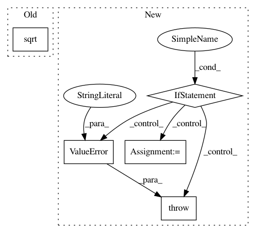

16d2eb3061f1bed8ade390c5e2a2c1de9daa3509,theanolm/optimizers/basicoptimizer.py,BasicOptimizer,__init__,#BasicOptimizer#Any#Any#Any#,16
Before Change
squares = [tensor.sqr(gradient) for gradient in gradients]
sums = [tensor.sum(square) for square in squares]
total_sum = sum(sums) // sum over parameter variables
norm = tensor.sqrt(total_sum)
target_norm = tensor.clip(norm, 0.0, max_norm)
gradients = [gradient * target_norm / (epsilon + norm)
for gradient in gradients]
After Change
for name, value in self.param_init_values.items()}
// numerical stability / smoothing term to prevent divide-by-zero
if not "epsilon" in optimization_options:
raise ValueError("Epsilon is not given in optimization options.")
self._epsilon = optimization_options["epsilon"]
// maximum norm for parameter updates
if "max_gradient_norm" in optimization_options:
self._max_gradient_norm = optimization_options["max_gradient_norm"]
else:
self._max_gradient_norm = None
// Derive the symbolic expression for log probability of each word.
In pattern: SUPERPATTERN
Frequency: 3
Non-data size: 5
Instances
Project Name: senarvi/theanolm
Commit Name: 16d2eb3061f1bed8ade390c5e2a2c1de9daa3509
Time: 2015-12-04
Author: seppo.git@marjaniemi.com
File Name: theanolm/optimizers/basicoptimizer.py
Class Name: BasicOptimizer
Method Name: __init__
Project Name: nipy/dipy
Commit Name: 70ae11c05da20cb3e1e7d6a9209dcf7d244acc57
Time: 2010-03-11
Author: matthew.brett@gmail.com
File Name: dipy/io/dwiparams.py
Class Name:
Method Name: B2q
Project Name: geomstats/geomstats
Commit Name: d6f8c673ee0cf24a495b62dbfcbe93ea0f14aa8f
Time: 2020-04-03
Author: ninamio78@gmail.com
File Name: geomstats/geometry/hypersphere.py
Class Name: Hypersphere
Method Name: intrinsic_to_extrinsic_coords